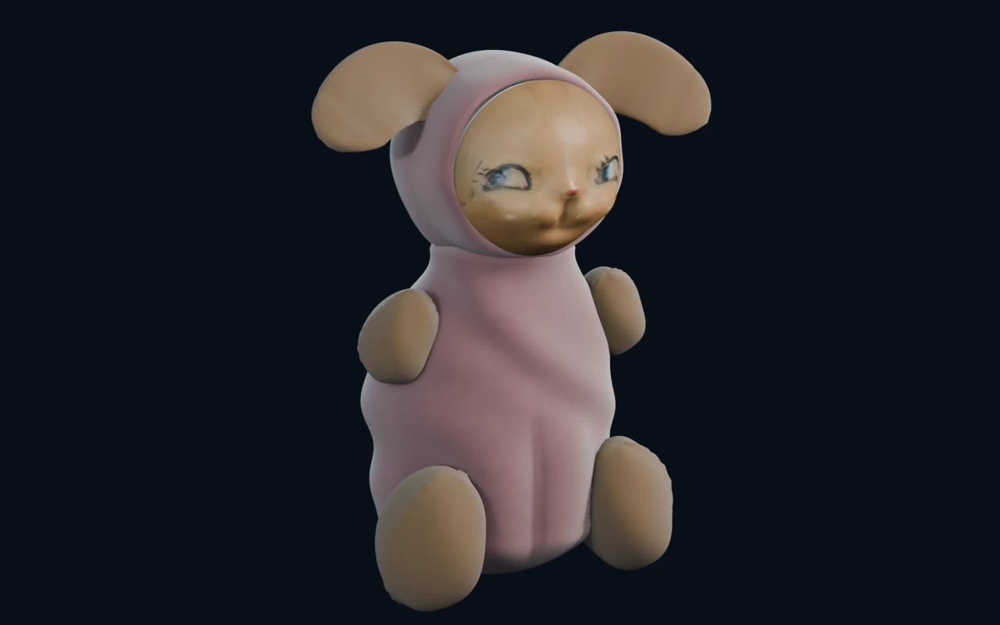
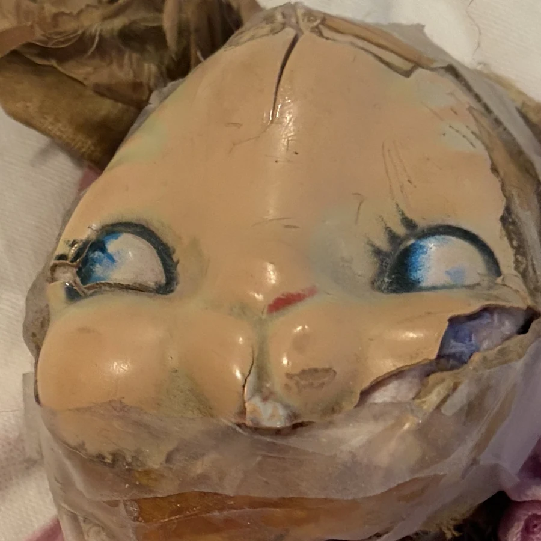
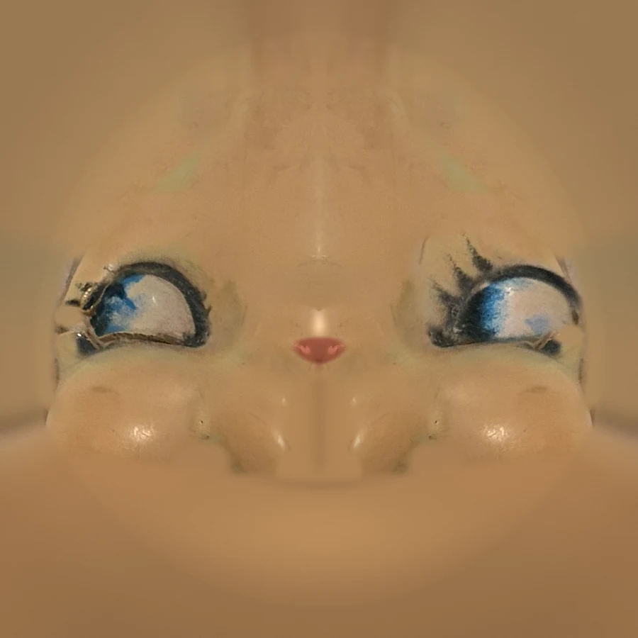
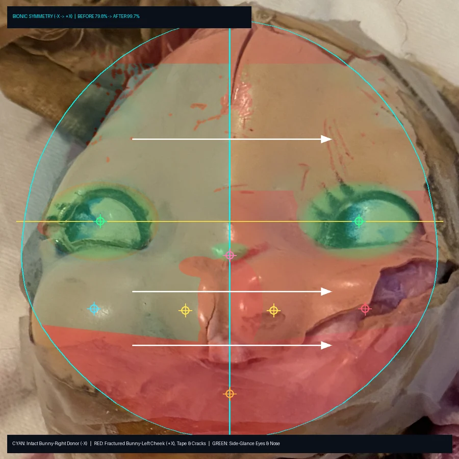

dumb_bunny_repaired.stl
Primary full-resolution 184 mm watertight figurine (358,230 tris, 1 shell, flat Z=0 bed pad).
“Gentlemen, we can rebuild him. Better. Stronger. Faster. Fuzzier.”
Subject: A cherished childhood vintage rubber-face plush rabbit. Barely alive. Left vinyl cheek shattered into jagged shards, held together by yellowing Scotch tape and stubborn nostalgia.
Our 6-agent Gemini 4 Neon High swarm digitized 4 iPhone photos into a live Blender 5.0.1 GUI sculpt, derezzed the fracture via strict right-to-left (-X → +X) symmetry, and forged 100% watertight 3D-printable STL prototypes.

-X → +X) Bionic Face RepairDrag the laser divider (or use arrow keys on the range slider) to compare the deskewed intake fracture against our Crisp v3 symmetric restoration. Toggle the diagnostic mask to inspect the exact derezzed repair zones.



INTAKE FRACTURE (79.80%) BIONIC REPAIR (99.69%)
Mirrored intact bunny-right (-X) donor cheek, lower temple & jaw onto the shattered bunny-left (+X) side with tight crack-boundary feathering, zero global blur, and exact luminance matching.
Dumb Bunny’s iconic side-glancing blue eyes and curved black painted lashes were surgically protected (overall image symmetry 76.63% → 93.70%) so his quirky vintage personality survived the bionic upgrade 100% intact!
Drag to orbit, scroll to zoom, switch between the full 184 mm restored figurine and the standalone symmetric replacement face mask, and toggle between Bionic Studio, TRON Neon Grid, and Wireframe X-Ray shaders.
Every mesh stage executed live inside a visible Blender 5.0.1 GUI over our atomic bpy.app.timers IPC bridge. Click any frame to launch the high-resolution lightbox inspector.
Every agent reported atomic JSON telemetry to work/tracker_state.json, powering a zero-dependency obsidian HUD anchored by our mandatory Collapsible Live Gantt Chart (GEMINI.md).
| Callsign | Specialty | Verified Deliverables |
|---|---|---|
coordinator |
OSI Mission Director | HEIC ingest, Blender GUI launch, Tracker server & swarm choreography |
photogrammetry |
4-View Calibration | measurements.json (24 slices), 4× ortho_*.png, calibration_sheet.png |
face-repair |
Bionic Symmetry | face_repaired.png (99.69%), face_heightmap_repaired.npy (0.0 err) |
sculptor |
Live Blender 5.0 GUI | stage1..5*.py, dumb_bunny.blend, watertight 1-shell STLs & OBJ/MTL |
verifier |
3D Printability QA | verify_prototype.py & qa_report.json (0 issues, 0 non-manifold) |
docs-publisher |
Bionic Archivist | README.md, ARCHITECTURE.md, USER_GUIDE.md & this GitHub Pages site |
GEMINI.md)
Expanded by default at the top of tracker/index.html with localStorage state persistence, adaptive +0m/+5m time ruler, glowing live NOW cursor, parallel worker swimlanes, grouped pipeline phases, and flicker-free delegated hover tooltips.
Switch tabs to inspect the system schematic & QA scorecard, copy exact FDM/SLA 3D printing profiles & vintage paint hex codes, or grab full-resolution production files straight from GitHub.
Audited Artifact (work/qa_report.json) |
Size | Topology & Geometry | Envelope & Volume | Status |
|---|---|---|---|---|
output/dumb_bunny_repaired.stl |
17.08 MB | 358,230 tris · 1 shell (Euler χ=2) · 0 boundary / 0 non-manifold | 139.57 × 95.55 × 184.01 mm · 784.616 cm³ | WATERTIGHT ✓ |
output/dumb_bunny_face_mask_repaired.stl |
5.94 MB | 124,644 tris · 1 shell (Euler χ=2) · 0.0029 mm X-RMS | 58.56 × 26.84 × 56.47 mm · 10.170 cm³ | WATERTIGHT ✓ |
output/dumb_bunny_repaired.obj + .mtl |
5.22 MB | 37,346 verts · 37,952 UV faces · 9 named parts · 3 PBR mats | Companion face_repaired.png (865.1 KB) |
PASS ✓ |
models/dumb_bunny.blend |
4.94 MB | Valid zstd-compressed Blender 5.0.1 master scene |
Packed textures, 3-point AgX lights & 4-view ortho rig | PASS ✓ |
git clone https://github.com/bsommers/dumb-bunny.git && cd dumb-bunny python3 tracker/server.py 8765 # Launch Live Mission Control HUD python3 src/verify_prototype.py # Re-verify watertight STLs & symmetry /Applications/Blender.app/Contents/MacOS/Blender --python src/blender_live_bridge.py
| Orientation | Upright — engineered flat bed cut at Z = 0.000 mm |
|---|---|
| Layer Height | 0.12 mm (or 0.16 mm variable) for crisp eye & hood relief |
| Walls / Infill | 3 perimeters (~1.2 mm) · 15% Gyroid (or Lightning for display) |
| Supports | Tree / Organic (Build Plate Only, 30°–35°) under ears & arms |
| Ear Safety | Floppy paddle ears reinforced to ≥ 5.6 mm thickness |
| Full Figurine SLA | Tilt 25°–30° backward (zero supports on face!), 2.5 mm hollow + 4 mm bottom drain holes |
|---|---|
| Face Mask SLA | Tilt 15°–20° back, 0.03 mm layers, medium supports on concave rear only |
| Face Mask FDM | 0.08–0.12 mm layers — try TPU 95A for authentic vintage rubber squish! |
| Symmetry Lock | Pre-remesh -X → +X mirror bisect = 0.0029 mm RMS (0.005% of width) |
Exact sRGB swatches extracted into work/measurements.json & work/face_blueprint.json so your hand-painted print matches childhood Dumb Bunny:
Primary full-resolution 184 mm watertight figurine (358,230 tris, 1 shell, flat Z=0 bed pad).
Standalone 3.5 mm bionic replacement face mask (124,644 tris, 0.0029 mm bilateral X-symmetry RMS).
Textured 9-part Wavefront OBJ (37,952 UV faces). Grab companion .mtl & face_repaired.png alongside.
Editable Blender 5.0.1 master scene with packed textures, PBR shaders, 3-point lighting & 4-view ortho rig.
Deep engineering schematics: CIE Lab segmentation, Crisp v3 repair math, Blender IPC protocol & Mermaid charts.
Step-by-step live Blender IPC tutorial, customization guide, troubleshooting & full 3D printing field manual.